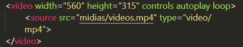

Inserindo vídeos nos sites
Parar inserir um vídeo, iremos criar um link usando a tag <video></video>
Para usarmos um vídeo, devemos colocar em diferentes formatos e tamanhos por conta do suporte do navegador ao usuário
Para fazermos isso devemos dentro da tag videos, usar a tag source abreviado de src para dizer onde está o arquivo e colocar no type o tipo de arquivo
Podemos também colocar um controle de mídia para o usuário, usando a tag "controls" dentro da tag de video
Podemos também colocar em loop (ficar repetindo o vídeo assim que acabar) usando a tag loop dentro da tag de vídeo

Quando colocamos um vídeo da nossa base de arquivos, estaremos utilizando banda do servidor próprio
Inserindo vídeos do Youtube
Quando colocamos um vídeo hospedado em outro site, estaremos utilizando banda do servidor do próprio site de hospedagem
exemplo: youtube
Exemplo: